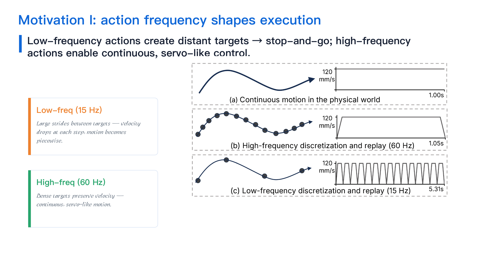
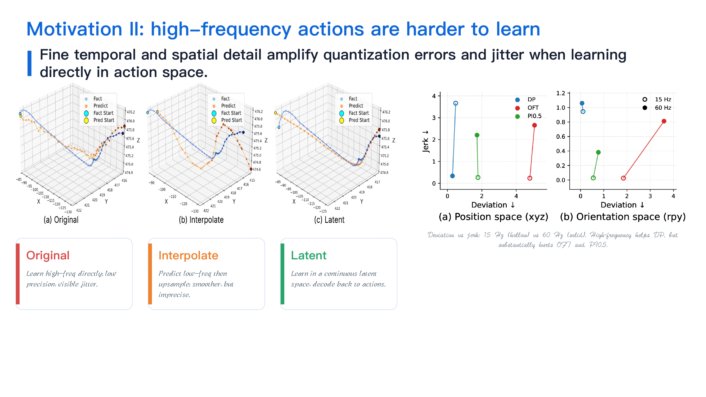
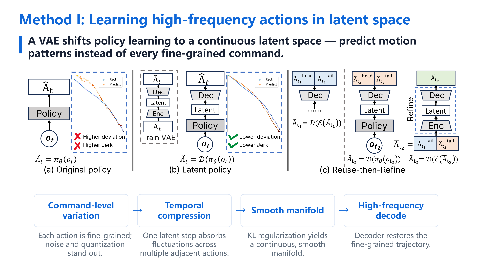
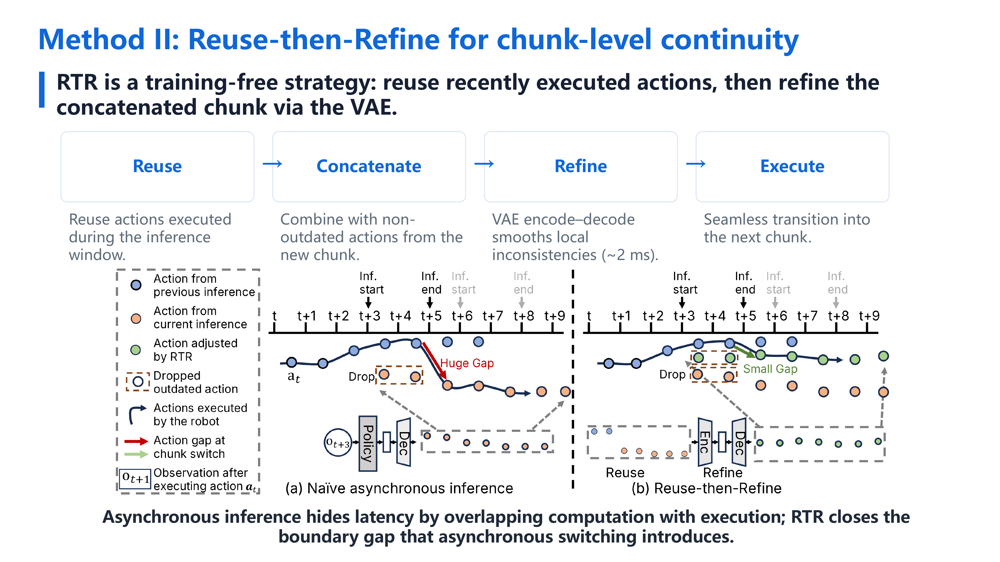

Kunyun Wang, Yuhang Zheng, Yupeng Zheng, Jieru Zhao, Wenchao Ding
ICML 2026Imitation learning policies control robots by predicting short sequences of future actions, known as action chunks, and then executing these actions on the robot. Increasing the action frequency can make robot motion smoother by reducing the stop-and-go behavior often seen in low-frequency execution, allowing the robot to move with more stable velocities. However, high-frequency actions are also harder for policies to learn, because they contain denser temporal information and finer spatial variations.
In this work, we propose learning high-frequency action chunks in a latent space, which provides a more compact and structured representation of motion. This helps the policy generate smoother and more consistent action sequences. To further reduce execution stalls caused by model inference latency, we use asynchronous inference, where the robot continues executing current actions while the policy predicts the next action chunk. However, asynchronous inference can introduce discontinuities when switching between chunks. To address this, we propose Reuse-then-Refine, a method that reduces boundary gaps between consecutive chunks and improves execution smoothness.
In real-robot experiments, our method reduces jerky motions and execution stalls across several contact-rich manipulation tasks. Overall, this work helps make learned robot policies more reliable for continuous physical interaction.
All videos are muted. Click any video to play; right-click for native browser controls. Videos play independently — pause one without affecting the others.
High-frequency actions are required for continuous robot motion with stable velocities, but learning them directly in action space is unstable. We show that learning in a continuous latent space recovers smooth, stable execution.
Before diving into the comparisons, three key ideas:



Continuous-contact wiping motion — smoothness directly visible in trajectory and contact quality.
Same task, same policy (Diffusion Policy), four action representations.
Takeaway: 15 Hz → too slow; interpolation → still jittery; direct 60 Hz → still jittery; latent 60 Hz → truly smooth.
Fine-motor writing task — trajectory precision and continuity are visually obvious in the handwriting output.
Contact-rich, force-sensitive task — stop-and-go produces visible force disturbances.
Latent space solves intra-chunk smoothness. Under asynchronous inference (which hides inference latency), a new problem appears: chunk-boundary discontinuities. RTR solves this with a training-free reuse-and-refine strategy. Combined latent-representation and RTR, our work achieves real-time smooth control.

RT-C is a real-time control baseline; even with RT-C, RTR still provides smoother transitions.
The most comprehensive group: demonstrates both contributions of the paper jointly — the frequency problem and the RTR solution.
Takeaway: low-freq → interpolation → direct high-freq → latent → latent + RTR. The full evolution from stop-and-go to seamless real-time control.